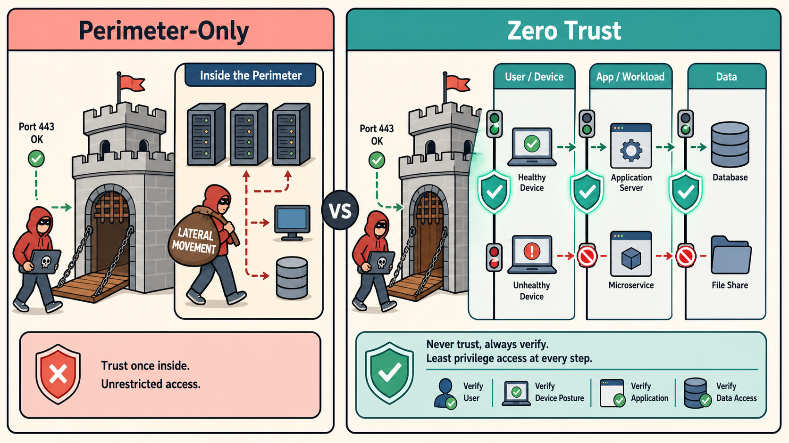
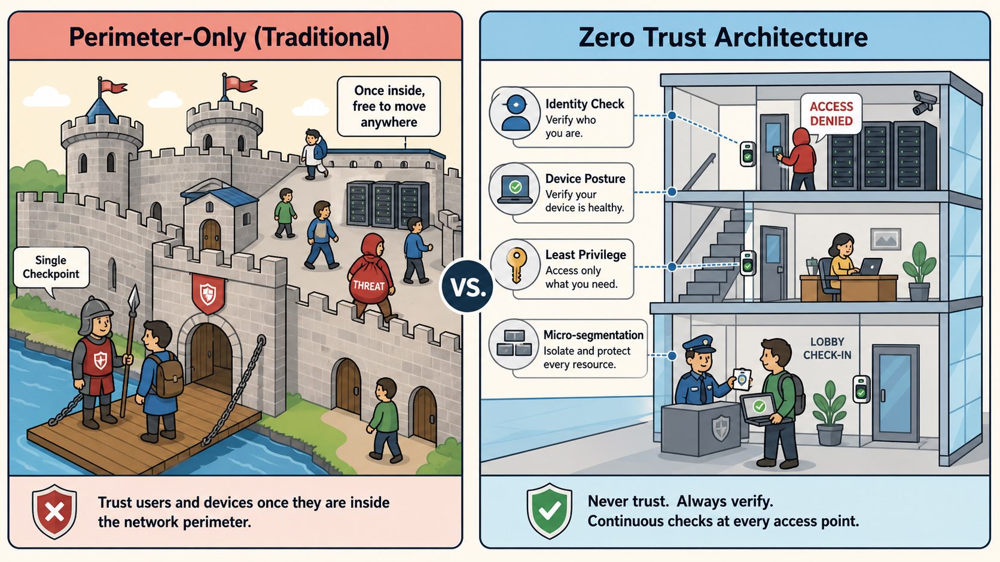
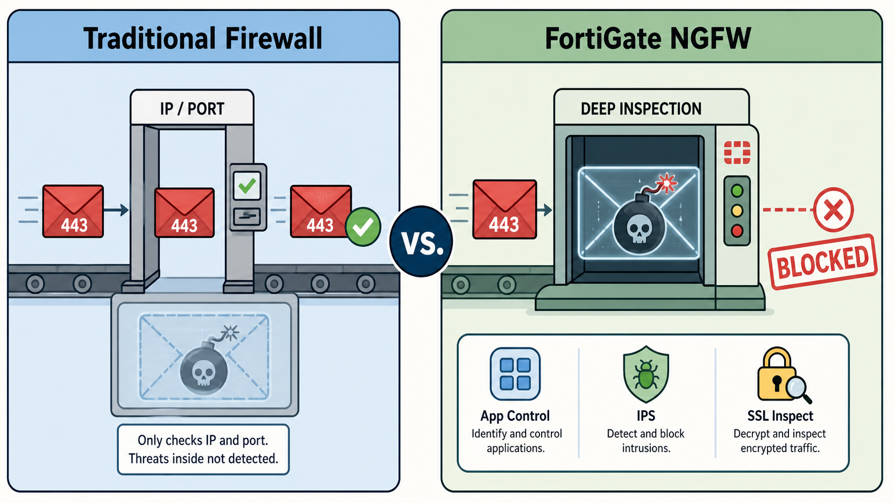
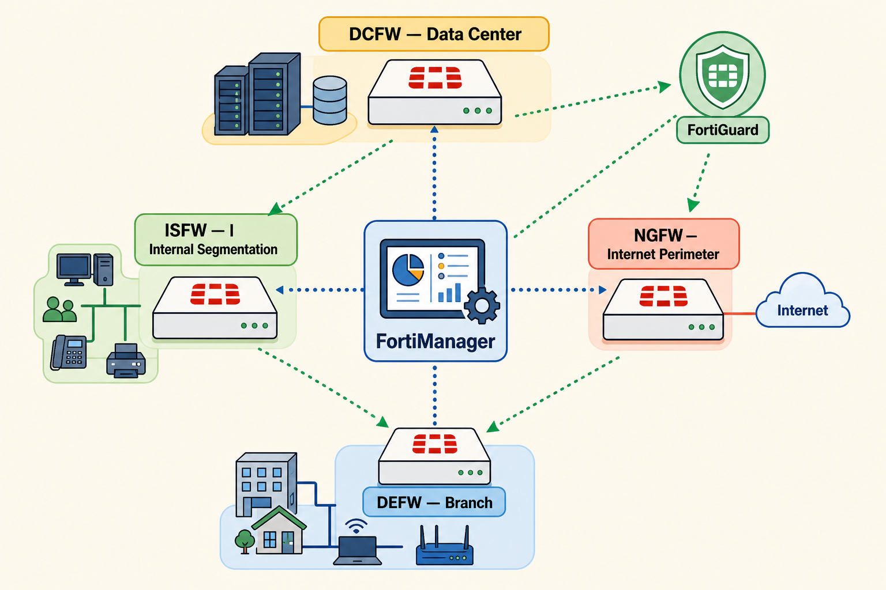
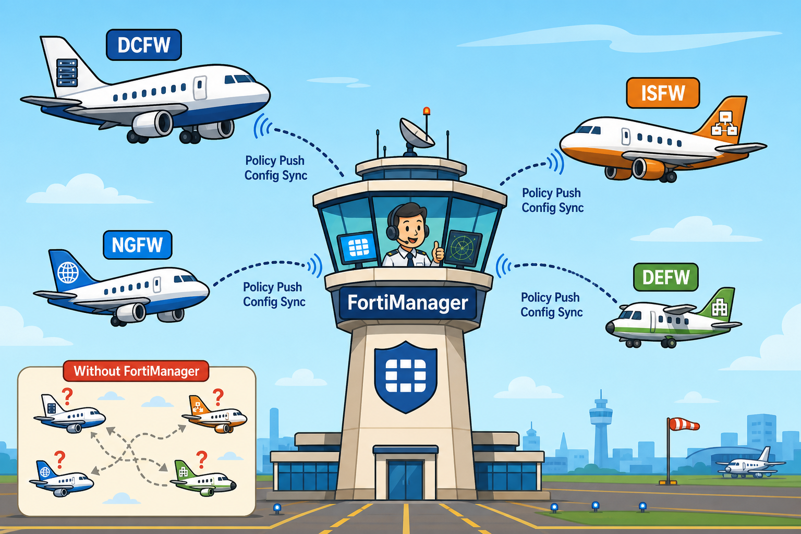

From perimeter-only thinking to zero-trust architecture — learn why modern networks need application-aware inspection, how FortiGate's feature tiers stack, and what physically happens to a packet from the moment it hits the wire.
The firewall isn't a wall anymore — it's an intelligent policy enforcement point that understands users, apps, and context.
This subtopic grounds the rest of the course: every HA cluster, IPsec tunnel, and Security Fabric feature you study later builds on this architectural foundation.
💭THINK FIRST · EVOLVING THREATS
Traditional perimeter firewalls operate on a "trust inside, verify at the edge" model — once traffic clears the boundary, internal hosts and lateral movement go largely unchecked. But modern breaches don't just bypass the perimeter; they often originate inside it entirely, through compromised credentials or supply chain attacks.
If an attacker has already obtained valid credentials for an internal user, how does a perimeter-only firewall fail — and what specific capability would stop lateral movement once the attacker is inside?
Zero trust requires verifying every access request regardless of network location. What is the performance cost of doing this inline, and what does FortiGate provide to make it feasible at enterprise scale?
Q1 — MODEL ANSWER
A perimeter firewall only controls north-south traffic. Once an attacker with valid credentials is inside, they move laterally between hosts freely — the firewall never sees it. An Internal Segmentation Firewall (ISFW) placed between network zones enforces east-west policies: the compromised host can only reach resources explicitly permitted, limiting blast radius to the breached segment.
Q2 — MODEL ANSWER
Verifying every connection with ZTNA adds identity lookups and policy evaluation overhead. FortiGate mitigates this through dedicated NP (Network Processor) and CP (Content Processor) ASICs that offload routing and crypto from the main CPU, allowing policy enforcement at line rate without degrading throughput for verified sessions.
SECTION 01
Evolving Threats and Zero Trust

Perimeter-only model vs. zero-trust architecture — every internal boundary enforces its own policy
images/s1-evolution.png
Flat colorful illustration, pastel palette (soft pinks, warm teals, cream background), bold outlines, minimal text. Two zones with a center divider. LEFT labeled "Perimeter-Only": a castle drawbridge gate — an attacker in a red hoodie easily walks through marked "Port 443 OK"; inside the perimeter a second red figure already moves freely between unprotected server racks carrying a bag labeled "LATERAL MOVEMENT". RIGHT labeled "Zero Trust": same network but layered glowing shield checkpoints between every zone — badge icons, device posture icons (laptop + green checkmark), red/green indicator lights at each internal boundary. No shadows, flat design, clean educational infographic style.
The enterprise network threat landscape has shifted dramatically — from external attackers probing edge ports to insider threats, supply chain compromises, and lateral movement within supposedly trusted internal segments. A traditional firewall filters by IP address and port; it has no visibility into what an application is actually doing or who the real user behind a connection is.
The zero-trust security model replaces implicit trust with continuous verification. The core principle is never trust, always verify: every access request — regardless of whether it originates inside or outside the corporate network — must be authenticated, authorized, and continuously validated. This requires three capabilities: identity verification (user and device authentication), least-privilege access control (access only to necessary resources, not the full network segment), and micro-segmentation (enforcement boundaries within the internal network, not just at the perimeter).
FortiGate implements zero trust through ZTNA (Zero Trust Network Access) access proxy and inline enforcement. ZTNA replaces traditional VPN by brokering access to specific applications rather than granting network-level connectivity. Device posture checks — certificate presence, OS version, patch level — are evaluated before a session is established. Combined with FortiClient for endpoint telemetry and FortiAuthenticator for identity management, FortiGate enforces contextual access policies at the per-application level.
Common misconception: Zero trust is an architecture, not a product. FortiGate is one enforcement point within a zero-trust deployment. The firewall alone cannot deliver zero trust without identity and endpoint context feeding into its policy engine.
Analogy
A traditional firewall is a castle — get past the gate and you're free to roam. Zero trust is a secure office building — every door has its own lock, tied to who you are and what you're allowed to reach.
Castle moat (perimeter firewall) — one checkpoint at the edge; anyone inside moves freely between rooms
Secure office lobby — entry check grants access to the building, not the whole building
Per-floor badge readers (micro-segmentation) — each zone enforces its own identity and clearance policy
Server room door denied (least privilege) — even a legitimate employee can't enter areas outside their role

Castle with moat = perimeter-only; secure office building with per-floor badge checks = zero trust
📷 images/a1-zero-trust-analogy.png — add this image to the folder
Flat-style educational cartoon, pastel palette (warm pinks, soft blues, cream backgrounds), bold clean outlines, infographic feel. Two side-by-side scenes. LEFT labeled "Perimeter-Only (Traditional)": a medieval stone castle with a single drawbridge and moat; one guard checks a traveler at the gate; inside the castle walls, multiple figures move freely between buildings — one carries a red bag labeled "THREAT" and walks unchallenged past servers and doors. RIGHT labeled "Zero Trust Architecture": a modern glass office building; front lobby has a guard checking a badge plus a small laptop icon with a green checkmark (device posture); stairwell doors between floors each have badge readers; on the 3rd floor a figure in red attempts to open a server room door — a red "ACCESS DENIED" sign appears. Small callout labels: "Identity Check", "Device Posture", "Least Privilege", "Micro-segmentation". Professional educational illustration, slightly playful.
🧠
MENTAL NOTE
Zero trust has three pillars: identity verification, least-privilege access, micro-segmentation. ZTNA grants app-level access (not network-level) — key behavioral difference from VPN. FortiGate enforces ZTNA inline via access proxy rules fed by FortiClient device posture telemetry.
ASK A QUESTION
ADD A NOTE
💭THINK FIRST · THE FORTIGATE NGFW
Next-generation firewalls extend traditional L3/L4 inspection into Layer 7, making policies application-aware. A rule can now say "allow Salesforce on port 443 but block file uploads within Salesforce" — something impossible for a stateful firewall that only sees port 443 HTTPS traffic.
A stateful firewall allows TCP/443 from the sales VLAN to the internet. What specific threat does this rule fail to block that a FortiGate NGFW with application control and SSL inspection could catch?
FortiGate organizes features into three tiers: Core, UTM, and Additional. Why does enabling UTM features like IPS and antivirus reduce throughput — and what hardware does FortiGate have to partially offset this?
Q1 — MODEL ANSWER
A traditional firewall sees only source IP, destination IP, and port. On TCP/443 it allows all HTTPS without examining payload. An NGFW with SSL inspection decrypts the connection and applies application control — blocking, for example, a C2 beacon disguised as HTTPS, or malware downloaded via a cloud storage app that exclusively uses port 443.
Q2 — MODEL ANSWER
UTM features require deep packet inspection: the CPU must examine payload content, not just headers. For encrypted traffic, SSL decryption must happen first, which is computationally expensive. FortiGate uses a dedicated CP (Content Processor) ASIC to accelerate pattern matching and cryptographic operations — offloading this from the main CPU. VM instances lack CP hardware and absorb all of this on the virtual CPU.
SECTION 02
The FortiGate NGFW

Traditional L3/L4 stateful firewall vs. FortiGate NGFW with deep packet inspection and SSL decryption
images/s2-ngfw.png
Flat colorful illustration, pastel palette (soft blues, sage green, light yellow), bold outlines, minimal text. Two scanner stations side by side with a center "vs." divider. LEFT labeled "Traditional Firewall": a simple gate with only a port/IP tag reader — a red envelope packet marked "443" sails through with a green checkmark; inside the envelope (X-ray faded view) is a malware bomb icon it never detected. RIGHT labeled "FortiGate NGFW": same red envelope arrives at a detailed scanning station showing an X-ray view revealing dangerous contents; a bold red BLOCKED stamp drops on it; small icons below the scanner: App Control, IPS, SSL Inspect. No shadows, flat design, educational infographic style.
Traditional stateful firewalls operate at Layers 3 and 4 — they track TCP/UDP connections and apply rules based on IP address, port, and protocol. While effective at blocking unauthorized connections, they are blind to application behavior, user identity, and encrypted payload content. A stateful firewall cannot distinguish between Zoom, Dropbox, and a command-and-control tool if all three use TCP/443.
A next-generation firewall (NGFW) adds Layer 7 application awareness through deep packet inspection (DPI). FortiGate can identify applications within encrypted streams (after SSL/TLS decryption), apply user-identity-based policies via Active Directory or LDAP integration, and scan payload content for malware signatures. This capability is enabled by FortiOS and the continuously updated FortiGuard application signature database.
FortiGate features are organized into three cumulative tiers:
Exam tip: An expired FortiGuard license does not disable inspection — FortiGate continues scanning against the last downloaded signature set. It goes stale, not silent. Know this distinction; it appears in scenario questions about license expiry.
🧠
MENTAL NOTE
Three tiers: Core (always on, no license) → UTM (AV/IPS/web filter, FortiGuard license) → Additional (ZTNA/sandbox/CASB, separate license). Expired FortiGuard license stales signatures but does not stop inspection. NGFW = L3/L4 stateful + L7 app awareness + user identity.
ASK A QUESTION
ADD A NOTE
💭THINK FIRST · SOLUTION ECOSYSTEM
Fortinet defines four deployment roles for FortiGate: DCFW, ISFW, NGFW, and DEFW. These aren't different products — they're the same FortiOS running on different hardware form factors, positioned at different points in the network to control different traffic flows. The role determines which features you prioritize and where the appliance physically sits.
DCFW and ISFW both sit "inside" the network, but they serve fundamentally different traffic types. What is the distinction between north-south and east-west traffic, and which role controls each?
FortiGuard Labs continuously pushes updates to FortiGate. If a FortiGate loses FortiGuard connectivity entirely, does it fail open or fail closed for UTM inspection — and what is the Fortinet default?
Q1 — MODEL ANSWER
North-south traffic flows between internal networks and the internet or DMZ — the classic perimeter use case, handled by the NGFW or DCFW role. East-west traffic flows between internal segments — server-to-server, VLAN-to-VLAN within the data center. ISFW controls east-west, preventing an attacker who compromises one segment from pivoting freely to others. DCFW handles traffic entering/exiting the data center boundary (also north-south, but at the DC perimeter specifically).
Q2 — MODEL ANSWER
FortiGate defaults to fail-open for UTM features when FortiGuard is unreachable — it continues inspecting traffic against the last downloaded signatures rather than blocking all traffic. This preserves availability, the correct trade-off for enterprise infrastructure. The exam sometimes presents this as a security risk scenario to check whether you know the actual default behavior vs. what you might intuit.
SECTION 03
The Fortinet Solution Ecosystem

Four FortiGate deployment roles (DCFW, ISFW, NGFW, DEFW) centrally managed by FortiManager and updated by FortiGuard
images/s3-ecosystem.png
Flat colorful illustration, pastel palette (warm yellows, soft blues, sage green, coral), bold outlines, minimal text. Bird's-eye network topology map. Four FortiGate appliance icons at different positions: top labeled "DCFW — Data Center", center-left labeled "ISFW — Internal Segmentation", right labeled "NGFW — Internet Perimeter", bottom labeled "DEFW — Branch". A central management console icon in the middle labeled "FortiManager" with dotted management lines connecting to all four appliances. A globe icon in the upper-right corner labeled "FortiGuard" with small arrow icons radiating outward to each appliance. Clean node-graph aesthetic, pastel fills on each node, bold labels, no shadows, flat design.
Fortinet positions FortiGate in four distinct deployment roles. The hardware form factor varies — from compact desktop appliances at the branch to high-density chassis at the data center — but all roles run FortiOS with the same feature set. The role determines which traffic flow you control and which features matter most.
Role
Placement
Traffic Controlled
Primary Concern
DCFW
Data center perimeter
North-south (external ↔ DC)
High throughput, carrier-grade reliability
ISFW
Internal network core
East-west (segment ↔ segment)
Micro-segmentation, lateral movement prevention
NGFW
Internet perimeter
North-south (LAN ↔ internet)
Application control, URL filtering, IPS
DEFW
Branch / remote office
North-south (branch ↔ WAN)
SD-WAN, VPN, compact form factor
Central to enterprise deployments is FortiManager, which provides centralized policy management, firmware deployment, and configuration push across all managed FortiGates. FortiManager uses ADOMs (Administrative Domains) to partition management responsibilities between teams or customers — each ADOM manages a distinct set of devices with its own policy package and administrator access.
FortiGuard Labs is Fortinet's threat intelligence and research arm. It operates a global sensor network and honeypot infrastructure that feeds AV signatures, IPS rules, URL category lists, and IP reputation data to FortiGate devices via the FortiGuard Distribution Network. FortiGate polls FortiGuard at configurable intervals; updates can also be triggered by active threat campaigns.
Analogy
FortiManager is an air traffic control tower — every FortiGate is a capable aircraft that can fly solo, but without the tower the airspace becomes unauditable chaos.
Control tower (FortiManager) — global visibility across the entire airspace; issues coordinated instructions to all aircraft
Aircraft (FortiGate) — fully capable of navigating independently, but only sees its own local airspace
Flight rules (policy packages) — pushed from the tower to every aircraft, ensuring consistent behaviour across the fleet
No tower — each plane flies its own plan; possible at small scale, but chaotic and nearly impossible to audit across hundreds of devices

Air traffic control tower (FortiManager) issuing coordinated policy to every aircraft (FortiGate)
📷 images/a2-fortimanager-analogy.png — add this image to the folder
Flat-style educational cartoon, pastel sky blues and warm ambers, bold outlines, infographic style. Main scene: a stylized airport control tower in the center labeled "FortiManager". In the airspace around it, 4 small cartoon aircraft each labeled with a FortiGate deployment role: "DCFW" (large jet, data center icon on tail), "ISFW" (mid-size plane, internal network segment icon), "NGFW" (plane with globe/internet icon), "DEFW" (small commuter plane with branch office icon). Dotted radio-wave lines from the tower to each aircraft labeled "Policy Push" and "Config Sync". Bottom-left corner inset labeled "Without FortiManager": 4 tiny planes flying in random conflicting directions with question marks above each. Short labels throughout. Professional educational illustration.
🧠
MENTAL NOTE
Four roles: DCFW (data center, high throughput, north-south), ISFW (internal, east-west, segmentation), NGFW (internet perimeter, UTM), DEFW (branch, SD-WAN). FortiManager centralizes management via ADOMs. FortiGuard Labs provides live threat intelligence — AV signatures, IPS rules, URL categories, IP reputation.
ASK A QUESTION
ADD A NOTE
💭THINK FIRST · LIFE OF A PACKET
FortiGate's packet processing pipeline is layered: hardware ASICs handle the fast path for routine traffic while the CPU handles complex security decisions. The order of operations — especially when DNAT and policy lookup happen — is a frequent exam topic because it determines how you write firewall policies and NAT rules correctly.
Destination NAT (DNAT) happens before policy lookup on FortiGate. What would break if the order were reversed — policy lookup first, then DNAT?
A FortiGate VM instance has no NP or CP processors. In what specific scenario does this become a hard bottleneck, and what would you tell an architect planning full SSL inspection at 10 Gbps on a VM-based FortiGate?
Q1 — MODEL ANSWER
If policy lookup happened before DNAT, the firewall would evaluate packets against the original public VIP destination. Every inbound policy would need to explicitly reference the public IP, and after translation you'd need a second lookup against the private destination. The current ordering — DNAT first — means a single policy rule matching the real internal host handles the entire flow cleanly.
Q2 — MODEL ANSWER
CP (Content Processor) ASICs accelerate SSL/TLS decryption, re-encryption, and deep packet inspection pattern matching. Without CP hardware, all of this falls on the main CPU, which is orders of magnitude slower per connection. At 10 Gbps with full SSL inspection, a VM FortiGate would be severely CPU-bound. The architect should use a physical FortiGate with CP9+ ASICs, or offload SSL inspection to a dedicated FortiProxy appliance.
Flat colorful illustration, pastel palette (blues, purples, mint green, cream), bold outlines, minimal text. Horizontal conveyor-belt pipeline. A small blue packet-box travels left to right through 6 labeled stations: 1) "NIC" (network port icon, teal), 2) "NP Fast Path" (chip icon, green — dotted bypass arrow arcs over stations 3-5 labeled "Known Session"), 3) "DNAT" (swap/transform icon — packet's destination label visibly changes from a public IP to a private IP, yellow), 4) "Policy" (rulebook with green/red traffic light, coral), 5) "UTM / CP" (magnifying glass + chip icon, purple), 6) "SNAT + OUT" (send-arrow icon, blue). Small red callout banner at the bottom: "VM FortiGate: no NP/CP → CPU only" with a bottleneck hourglass icon. Bold flow arrows between each station. No shadows, flat design.
Understanding how FortiGate processes a packet from ingress to egress is foundational for troubleshooting and for writing correct policies. The pipeline involves three hardware/software layers, each with a distinct role. Getting the order of operations wrong is a common exam mistake — and a common production misconfiguration.
The packet pipeline in order:
Ingress NIC: Packet arrives on a physical interface.
NP (Network Processor): If the session is already established and offloaded, NP forwards subsequent packets without CPU involvement — this is the fast path. New sessions fall through to the kernel.
Kernel / session table: IP sanity checks, IP options, fragmentation reassembly.
DNAT / VIP translation:Destination NAT is applied before policy lookup. The packet's destination IP is rewritten to the real internal host address.
Policy lookup: FortiGate evaluates the packet against the firewall policy table (top-down, first match). The post-DNAT destination is used here.
UTM / security profiles: If the matching policy has profiles attached, packet content is deep-inspected. CP handles SSL decryption and pattern matching acceleration.
SNAT / egress routing: Source NAT is applied after the policy lookup. The packet routes to the outbound interface.
Egress NP: Offloaded sessions are handled by NP for the remainder of their lifetime — CPU is no longer in the path.
Key exam gotcha — DNAT before policy: When a VIP is configured, FortiGate translates the destination before the policy check. Your firewall policy must match the private destination IP of the server, not the public VIP address. Writing the policy against the public IP is one of the most common VIP misconfigurations on the exam and in production.
Virtual FortiGate (VM): FortiGate VMs run FortiOS on hypervisor infrastructure (ESXi, KVM, AWS, Azure). No NP or CP ASICs are present — all processing including SSL inspection and session handling runs on the virtual CPU. This significantly lowers maximum throughput ceilings compared to physical appliances. Size VM deployments with CPU-only throughput numbers, not physical appliance specs.
🧠
MENTAL NOTE
Order of operations: DNAT → policy lookup → UTM inspection → SNAT. DNAT goes first, so policies must match the translated (private) destination. NP offloads established sessions (fast path, CPU bypassed). CP accelerates SSL decryption and pattern matching. Virtual FortiGate = no NP/CP = CPU-only, hard throughput ceiling.